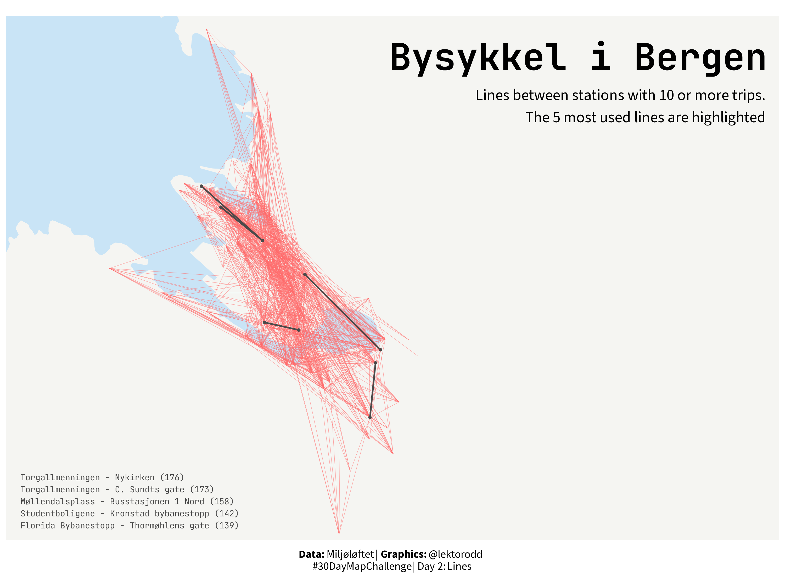
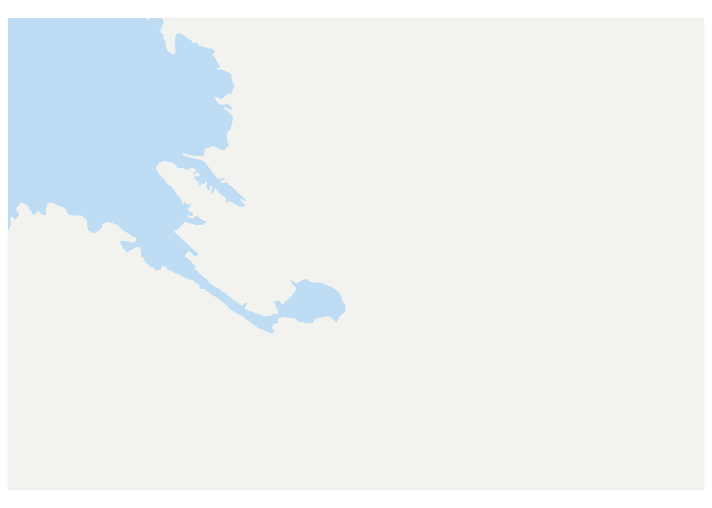
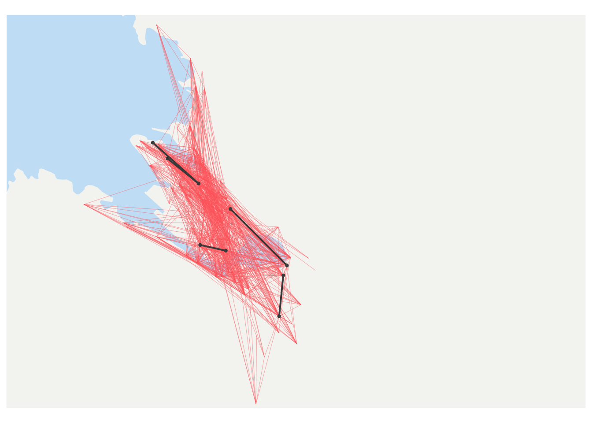
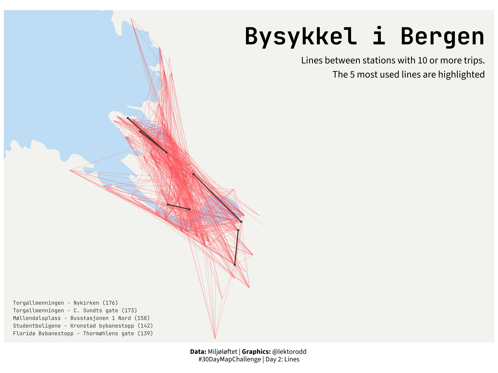

library(ggplot2)
library(tidyr)
library(sfarrow)
library(sf)
library(readr)
library(dplyr)
library(showtext)
library(ggtext)
library(glue)
library(here)Day 2 - Lines
#30DayMapChallenge 2025
R
code
maps
2025
Second map in the series (and ever…). Hoping to use the same data and basemap-style as yesterday, but try to visualize the trips themselves as lines.

TipLibraries used
Data
Same data and source as yesterday
# Load bikerides
turar <- read_csv(here("data/bysykkel/bysykkel-25-08.csv"))
# Load spatial data
bergen <- st_read_parquet(here("data/Kommuner.parquet"))|>
filter(navn == "Bergen") |>
st_set_crs(25833) |>
st_transform(4326)
# Boundaries
xlim_vals <- c(5.27, 5.44)
ylim_vals <- c(60.36, 60.417)Setup
Choose some fonts, colors and text for titles.
# Fonts
font_add_google("Source Sans 3", "sourcesans")
font_add_google("JetBrains Mono", "jbmono")
showtext_auto()
showtext_opts(dpi = 300)
body_font <- "sourcesans"
title_font <- "jbmono"
# Colors
land_farge = "#f5f5f2"
sjø_farge = "#c9e4f6"
grense_farge = "#8a8a8a"
stasjon_farge = "#0091D5"
linje_farge = "#ff6b6b"
utheving_farge = "#4a4a4a"
# Text
tittel <- "Bysykkel i Bergen"
subtittel <- "Lines between stations with 10 or more trips.\nThe 5 most used lines are highlighted"
caption <- "**Data:** Miljøløftet | **Graphics:** @lektorodd <br>#30DayMapChallenge | Day 2: Lines"Data wrangling
As you may have read between the lines (…) in the subtitle above, there are a lot of different trips in the dataset. But first we have to get the different trips. I dont care about direction, so a trip from station A to B is the same as from B to A.
The data contains one row per trip:
nturar <- nrow(turar)
nturar[1] 33846For August 2025 there were a total of 33 846 trips with the city bikes. Quite impressive for a small and hilly city like Bergen!
There were some trips starting and ending at the same station:
lik_start_slutt <- turar |>
filter(start_station_id == end_station_id) |>
nrow()
lik_start_slutt[1] 952List of stations
stasjonsliste <- turar |>
select(
start_station_id,
start_station_name,
start_station_latitude,
start_station_longitude
) |>
distinct(start_station_id, .keep_all = TRUE) |>
rename(
station_id = start_station_id,
station_name = start_station_name,
latitude = start_station_latitude,
longitude = start_station_longitude) |>
select(station_id, station_name, latitude, longitude)Trips
So, we need to exclude the trips going to and from the same station. Also we need to see the conncetions from A to B the same as from B to A. Will use the station id number to fix this.
# filter out the loops
turar_mellom <- turar |>
filter(start_station_id != end_station_id)
# trips between stations, ignoring direction
turar_par <- turar_mellom |>
mutate(
station_1 = pmin(start_station_id, end_station_id),
station_2 = pmax(start_station_id, end_station_id)
) |>
group_by(station_1, station_2) |>
summarise(
n_turar = n(),
.groups = "drop"
)Then add coordinates for the stations:
# Adding coordinates for station_1
turar_par_koord <- turar_par |>
left_join(
stasjonsliste,
by = c("station_1" = "station_id")
) |>
rename(
lon_1 = longitude,
lat_1 = latitude,
name_1 = station_name
)
# Adding coordinates for station_2
turar_par_koord <- turar_par_koord |>
left_join(
stasjonsliste,
by = c("station_2" = "station_id")
) |>
rename(
lon_2 = longitude,
lat_2 = latitude,
name_2 = station_name
)Finally, I want to calculate the top connections.
# Find the top 5 trips
topp_turar <- turar_par_koord |>
slice_max(n_turar, n = 5)
# Get the stations involved in the top trips
topp_stasjoner <- stasjonsliste |>
filter(station_id %in% c(topp_turar$station_1, topp_turar$station_2))
# Prepare text for the top routes
topp_ruter_tekst <- topp_turar |>
mutate(
rute_linje = glue("{name_1} - {name_2} ({n_turar})")
) |>
pull(rute_linje) |>
paste(collapse = "\n")Plotting
First I will plot a basemap, then gradually build a plot on top of that.
Basemap
basekart <- ggplot() +
geom_sf(data = bergen, fill = land_farge, color = NA) +
coord_sf(xlim = xlim_vals, ylim = ylim_vals) +
theme(
plot.title = element_text(
family = title_font,
size = 32,
face = "bold",
hjust = 0.5,
margin = margin(b = 15)
),
plot.subtitle = element_textbox_simple(
family = body_font,
size = 12,
halign = 0.5,
margin = margin(b = 10),
),
legend.text = element_text(
family = body_font,
size = 9
),
legend.position = "bottom",
legend.key = element_blank(),
panel.background = element_rect(fill = sjø_farge),
panel.grid = element_blank(),
axis.title = element_blank(),
axis.text = element_blank(),
axis.ticks = element_blank()
)
basekart
Adding lines
plott <- basekart +
geom_segment(
data = filter(turar_par_koord, n_turar > 9),
aes(x = lon_1, y = lat_1, xend = lon_2, yend = lat_2),
color = linje_farge,
linewidth = 0.15,
alpha = 0.6,
)
plottHighlight top lines
plott <- plott +
geom_segment(
data = topp_turar,
aes(x = lon_1, y = lat_1, xend = lon_2, yend = lat_2),
color = utheving_farge,
linewidth = 0.7,
lineend = "round"
)
plott <- plott +
geom_point(
data = topp_stasjoner,
aes(x = longitude, y = latitude),
color = utheving_farge,
size = 0.8,
alpha = 1
)
plott
Finalize plot with titles and caption
plott <- plott +
annotate(
"text",
x = 5.445,
y = 60.415,
label = tittel,
family = title_font,
size = 12,
fontface = "bold",
hjust = 1,
) +
annotate(
"text",
x = 5.445,
y = 60.411,
family = body_font,
size = 5,
hjust = 1,
vjust = 1,
label = subtittel,
)
plott <- plott +
annotate(
"text",
x = 5.265,
y = 60.365,
color = utheving_farge,
label = topp_ruter_tekst,
family = title_font,
size = 2.7,
hjust = 0,
vjust = 1,
lineheight = 1.2,
)
plott <- plott +
labs(
caption = caption
) +
theme(
plot.caption = element_markdown(
family = body_font,
size = 10,
hjust = 0.5,
lineheight = 1.1,
margin = margin(t = 10))
)
plott